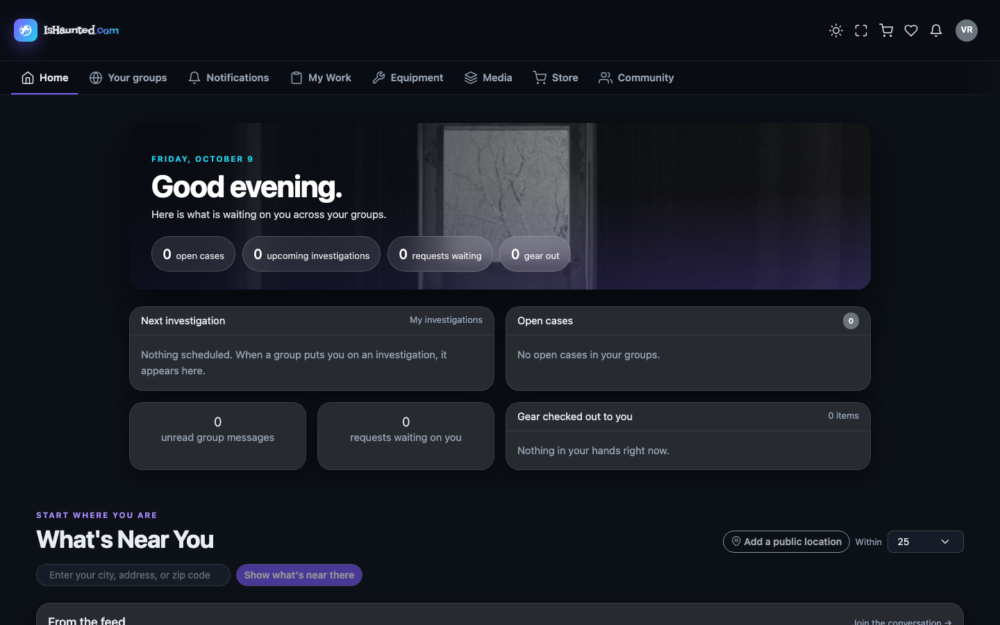
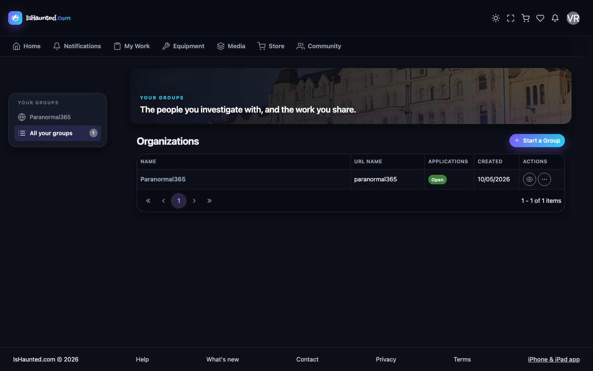
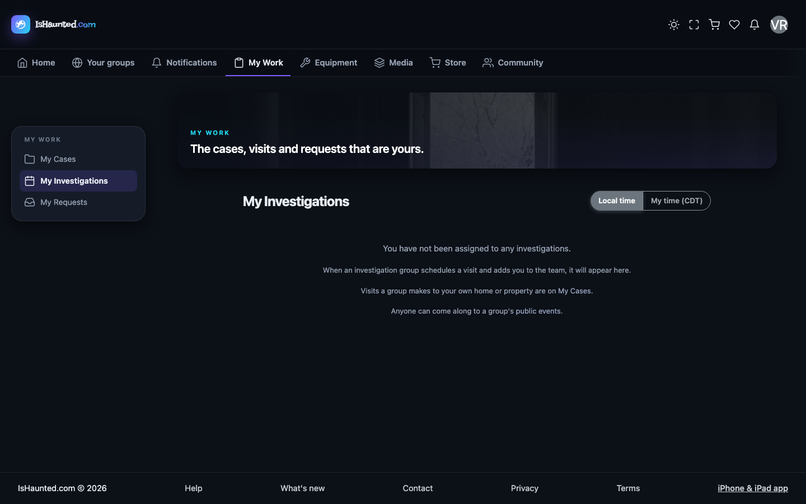
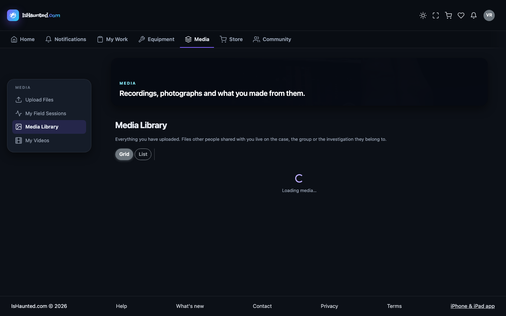
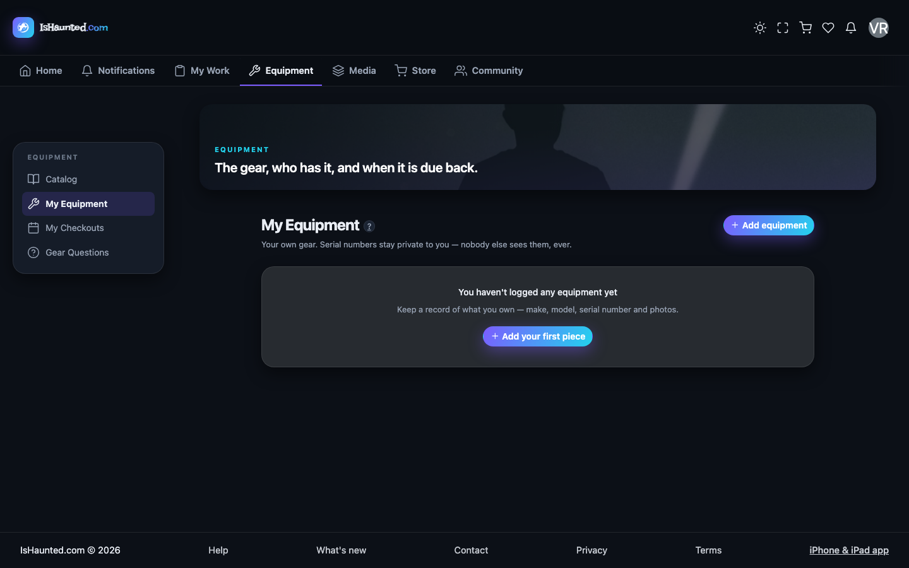

Belongs to a group, may look, changes nothing. Written for a developer joining the project.
Every screenshot shows simulated, seeded data, captured in dark mode while signed in as this user type. Nothing here is a real person, case or investigation. Where a page shows a refusal, that is the designed behavior for this seat.
The viewer exists so that a group can bring somebody in — a trainee, a property owner, an interested colleague — without giving them the ability to alter the record.
The interesting question for a developer is what a read-only seat should look like. The answer this site chose: the controls are absent, not disabled-and-mocking. A greyed-out button that never works is worse than no button, because it invites a click and then refuses it.
Two things gate every surface, and they are different questions:
Your seat in a group — owner, administrator, member, viewer — answers "may this person do this?". The group's plan answers "does this group pay for this at all?". A member of a group whose plan excludes an area is refused for a completely different reason than a viewer who is not allowed to write, and the site says which.
A refusal is never rendered as "nothing here." An empty list and a server
saying no are different facts, and a page that shows the same gray nothing for both teaches people
to distrust it. Every list goes through LoadResult, which carries loading, empty,
refused, session-ended and rate-limited as distinct states — and every one of them has its own
words on screen.
This matters when reading this document: where a screenshot shows a refusal, that is the designed behavior for this seat, not a broken page.
Home. The viewer's landing page — the same shell, fewer doors.

Organizations. Their group, read-only.

My investigations. Investigations they may read.

Media library. Media they may look at but not change.

My equipment. Equipment, without the ability to check anything out.
